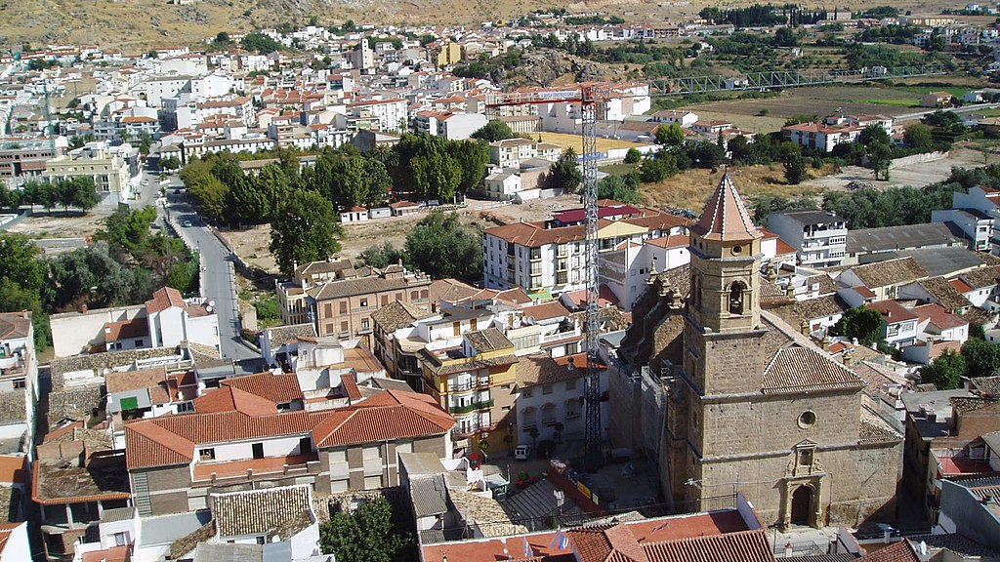

Loja es una ciudad y municipio español de la provincia de Granada, en la comunidad autónoma de Andalucía. En 2017 contaba con una población de 20 469 habitantes1(INE). Su término municipal es el más occidental de toda la provincia e incluye los núcleos de Loja —el más importante de la comarca del mismo nombre, así como de todo el Poniente Granadino—, Barrio de San Antonio, Ventorros de San José, Fuente Camacho, El Bujeo, Venta del Rayo, La Fábrica, La Esperanza, Ventorros de la Laguna, Riofrío, La Palma, El Frontil, Ventorros de Balerma, Venta Santa Bárbara, Cuesta Blanca y Atajea. En la economía municipal destaca principalmente el sector agrícola y de servicios, contando con una importante industria del mármol; está planteada la constitución del primer centro de reproducción para la agricultura ecológica de la comunidad.
 Cosas buenas de Loja